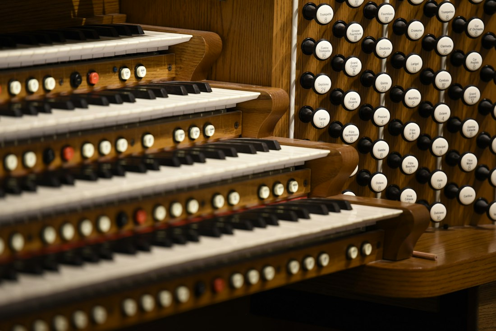

Voice Lessons
Classical voice performance instruction for students ages 12 and up, building healthy technique and confident, expressive singing.
Now enrolling Winter & Spring piano and voice students in Wadsworth Holiday lesson gift certificates available.
Carol Ann Mancini · Mancini Music Studio · Wadsworth, Ohio
Voice and piano teacher, organist, and choir director, sharing classical and sacred music for six decades.
Book a lesson Lessons & servicesCarol Ann Mancini began playing the organ for Sunday liturgies in Milford, Massachusetts, in 1965, and music has been at the center of her life ever since. Today she is Choir Director and Organist at St. Andrew the Apostle Parish in Norton, Ohio. She has taught piano and voice since 1990, and at Mancini Music Studio in Wadsworth her students share their progress at a recital each year.
Carol trained in classical organ at St. Paul's Cathedral in Worcester, Massachusetts, with Mr. Luke Richard, and studied classical voice with Estelle McCausland and with international opera singer Luisa Valasco Westfall. As a soprano soloist, she has sung Handel's Messiah and Fauré's Requiem, and she performed Mozart's Vesperae solennes de confessore with the Toledo Chamber Orchestra. She also sang Bach's Mass in B minor as a member of the Toledo Symphony Chorale.
Whether she is preparing a student for a college audition, leading a choir through Holy Week, or playing for a wedding, Carol brings the same care, patience, and love of music.

Private instruction for young students and adults alike, and music for life's most meaningful occasions.
Classical voice performance instruction for students ages 12 and up, building healthy technique and confident, expressive singing.
Focused preparation for regional competitions and college entrance auditions, from choosing repertoire to performance day.
Lessons for students ages 7 and up, from beginners through intermediate players, with music theory woven into every step.
Every student has the chance to perform in the studio's annual recital, a proud moment to share with family and friends.
Organist and soprano soloist for weddings, funerals, and memorial services, with music thoughtfully chosen together with each family.
Choir direction, cantoring, and substitute organist services for Sunday liturgies, Confirmation, Christmas, Holy Week, and Easter.
From the students and families Carol has taught and served.
Our daughter started with Carol at seven, barely able to find middle C. Three years later she plays for the family every Sunday, and she actually asks to practice. Carol is patient, warm, and wonderfully encouraging.
[Placeholder — replace with real parent/student quote]
Carol helped me choose my audition repertoire, worked on every phrase with me, and gave me the confidence to walk into the room calm. I was accepted into my first-choice voice program.
[Placeholder — replace with real parent/student quote]
Carol played and sang at our wedding and, years later, at my father's funeral. Both times she took the time to learn what mattered to us, and the music was beautiful.
[Placeholder — replace with real parent/student quote]
A career in teaching, church music, and classical performance.
The details families ask about most often before their first lesson.
Weekly private, in-person lessons at Carol's studio in Wadsworth, Ohio. Choose 30-minute or 60-minute lessons.
Text Carol at (774) 804-1274 or call (330) 590-1161 to discuss current tuition rates, studio availability, and the right starting level for your child or yourself.
Piano students will need an acoustic piano or a full-size, weighted keyboard at home for daily practice. Voice students just bring enthusiasm and a notebook.
Every student is invited, never forced, to perform in the studio's yearly recital.
Interested in voice or piano lessons, audition preparation, or music for a wedding or funeral? Carol would love to hear from you.
Text Preferred for quick questions
(774) 804-1274 (send a text message)Text anytime for lesson availability, rates, or wedding/funeral inquiries (text-only line).
Location Wadsworth, Ohio
Carol on Facebook (opens in a new tab)Piano lessons for students ages 7 and up, and voice lessons for ages 12 and up. New students are welcome year-round as studio openings become available.